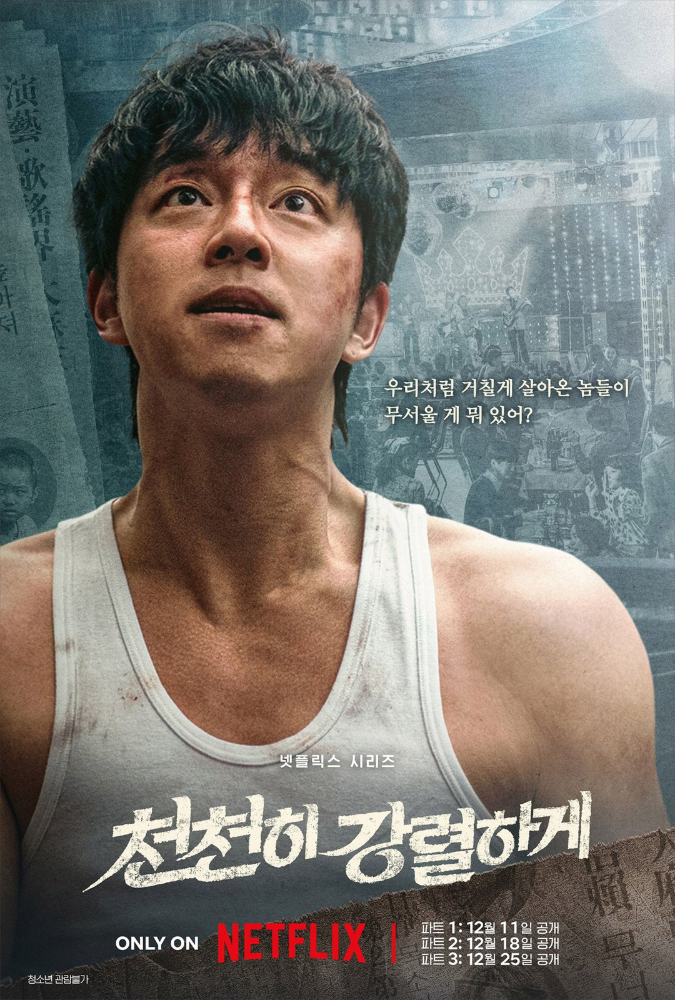

"돈이 있다고, 여긴." 송혜교가 포스터에서 던진 한마디예요. 공유와 함께 주연을 맡은 넷플릭스 시리즈 '천천히 강렬하게'의 공개 일정이 나왔어요. 언제부터 볼 수 있는지, 포스터 속 네 사람은 누구인지 정리했어요.
📷 사진 1 자리
▲ 넷플릭스 시리즈 '천천히 강렬하게' 민자(송혜교) 캐릭터 포스터 · 사진=넷플릭스 제공
22부작을 세 번의 금요일에
노희경 작가가 쓴 이 작품은 1960~80년대 한국 연예계가 무대예요. 가진 것 없이 성공 하나를 바라보고 온몸을 던진 사람들의 이야기죠.
분량은 22부작이고, 한 번에 다 풀지 않아요. 파트1이 12월 11일, 파트2가 12월 18일, 파트3이 12월 25일에 공개돼요. 세 날 모두 금요일이고, 마지막 파트는 크리스마스에 나와요.
📷 사진 2 자리
▲ '천천히 강렬하게' 동구(공유) 캐릭터 포스터 · 사진=넷플릭스 제공
정주행을 좋아한다면 25일까지 기다렸다 몰아 보는 방법도 있어요. 반대로 매주 한 파트씩 따라가면 연말 금요일 세 번을 이 드라마로 채우게 돼요.
포스터 대사로 보는 네 사람
이번에 함께 나온 캐릭터 포스터에는 인물마다 한 줄씩 대사가 붙어 있어요. 이름과 함께 모아 보면 이래요.
대사로 보면 민자는 돈의 냄새를 좇고, 동구는 잃을 게 없는 배짱으로 버텨요. 민희의 대사는 누군가에게 버려지지 않으려는 마음이 성공과 붙어 있고, 정장 차림으로 무대를 지휘하는 석길여는 바닥에서 올라온 자신을 감추지 않아요.
📷 사진 3 자리
▲ '천천히 강렬하게' 석길여(차승원) 캐릭터 포스터 · 사진=넷플릭스 제공
포스터 속 네 사람이 움직이는 모습은 넷플릭스 코리아 공식 채널에 올라온 티저 예고편에서 먼저 볼 수 있어요.
▶ 영상 1 자리
이런 분께 맞는 연말 시리즈
'천천히 강렬하게'는 성공을 향해 달려간 연예계 사람들의 이야기를 22부작에 담은 시대극이에요. 노희경 작가의 글과 송혜교·공유의 만남이 가장 큰 관심사예요.
볼거리는 시대를 입은 배우들이에요. 짧은 단발에 무스탕 차림의 송혜교, 땀에 젖은 러닝셔츠의 공유, 양 갈래머리의 김설현, 뿔테 안경에 나비넥타이를 맨 차승원까지 포스터만으로도 인상이 뚜렷해요.
긴 호흡의 드라마를 좋아하는 분, 1960~80년대 무대와 방송가 이야기가 궁금한 분께 맞아요. 노희경 작가의 인물 드라마를 기다려 온 분이라면 공개일을 달력에 적어 둘 만해요.
정리하면서 눈에 띈 건 22부작이라는 긴 분량을 3주라는 짧은 기간에 몰아서 낸다는 점이었어요. 평균으로 따지면 한 번에 일곱 편 남짓이 풀리는 셈이라, 공개되는 금요일마다 시간을 넉넉히 비워 두는 편이 좋겠어요.
'천천히 강렬하게'는 12월 11일부터 매주 금요일 한 파트씩, 25일까지 세 번에 걸쳐 넷플릭스에서 공개돼요.
